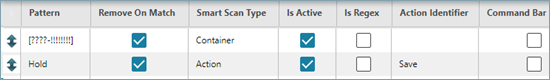

Definieren von Smart Scanning-Regeln
Smart Scanning-Regeln werden beim regelbasierten Smart Scanning als Alternative zum standardmäßigen Smart Scanning verwendet. Mit einer Smart Scanning-Regel können Sie Datenmuster definieren, die Datenelemente in einem Barcode erkennen. Die Regel kann mit Verarbeitungsanweisungen konfiguriert werden, einschließlich der automatisierten Ausführung von Seitenaktionen, z. B. eines Schaltflächenklicks, der ansonsten manuell vom Bediener ausgeführt würde.
Die Anwendung verwendet das oder die Muster in einer Smart Scanning-Regel, um Barcode-Daten zu interpretieren. Die Muster müssen den Barcodes entsprechen, die verarbeitet werden sollen.
Beispiel
Das folgende Beispielszenario dient zur Veranschaulichung:
| 1. | Die Anwendung ist mit einer Smart Scanning-Regel mit den folgenden Mustern konfiguriert: |

| 2. | Ein Bediener scannt einen Barcode in eine Anwendungsseite. Die Seite enthält verschiedene Felder, z. B. einen Containerbezeichner und eine Schaltfläche "Speichern". Der Barcode enthält die Zeichenfolge: CON-12348976. Er enthält außerdem eine Zeichenfolge mit den Zeichen "Hold", die darauf hinweist, dass die Seitendaten für den Abschluss zu einem späteren Zeitpunkt gespeichert werden sollen. |
| 3. | Die Anwendung wertet den Barcode anhand der Smart Scanning-Regel aus und führt die folgende Logik aus: |
| a. | Suchen der Zeichenfolge zum ersten Muster, das in drei Buchstaben, gefolgt von einem Bindestrich und acht numerische Ziffern dahinter aufgelöst wird. |
| b. | Extrahieren der Datenzeichenfolge und Einfügen der Datenzeichenfolge in das Feld auf der Seite, die dem Smart Scanning-Typ des Musters entspricht: Container. |
| c. | Entfernen der Datenzeichenfolge, weil "Bei Übereinstimmung entfernen" für das Muster ausgewählt ist. |
| d. | Suchen des Musters mit den vier Zeichen "Hold". |
| e. | Extrahieren der Daten der Zeichenfolge "Hold" aus dem Barcode. |
| f. | Automatisches Abschicken der onClick-Aktion der Schaltfläche "Speichern", da der Aktionsidentifikator "Speichern" ist. |
| Hinweis: | Dieses Beispiel ist nur eines von vielen. Für eine andere Fabrik kann ein völlig anderes Muster für Ihren Containerbezeichner konfiguriert sein. |
Diese Tabelle beschreibt die Elemente eines Musters.
|
Element |
Description |
||||||||||||
|---|---|---|---|---|---|---|---|---|---|---|---|---|---|
|
Konstanten |
Buchstaben, Zahlen und Sonderzeichen |
||||||||||||
|
Platzhalter |
|
||||||||||||
|
[ ] |
Klammern weisen darauf hin, dass der Inhalt als Wert extrahiert werden kann. |
Sie können Zeichen in ein Muster aufnehmen, indem Sie ihre ASCII-Dezimalcodes (000 bis 255) angeben. Um anzuzeigen, dass die nächsten 1 bis 3 Zeichen als ASCII-Code behandelt werden sollen, wird ein umgekehrter Schrägstrich (\) verwendet. Der Code für den Großbuchstaben "A" z. B. ist 65. Wenn also die Zeichenfolge "\65" oder "\065 "in einem Muster auftritt, wird sie vom Smart-Scan-Prozessor als "A" behandelt. Da der umgekehrte Schrägstrich eine besondere Bedeutung für den Smart Scan-Prozessor hat, können Sie ihn nicht direkt in ein Muster einfügen. Sie müssen stattdessen den ASCII-Code 92 verwenden. Alle ASCII-Codes im Muster werden vor dem Abgleich mit dem Barcode in ihre Zeichenwerte aufgelöst.
Betrachten Sie folgende Beispiele:
|
Barcode |
Muster |
Aufgelöstes Muster |
Extrahierte Daten |
|---|---|---|---|
|
P\NPCB-1234 |
P\092N[PCB-!!!!] |
P\N[PCB-1234] |
PCB-1234 |
|
APPCB-1234 |
\65P[PCB-!!!!] |
AP[PCB-!!!!] |
PCB-1234 |
|
APPCB-1234 |
AP[\80\67\66-!!!!] |
AP[PCB-!!!!] |
PCB-1234 |
Barcodes können einen einzelnen Wert oder mehrere Werte mit Informationen enthalten. Die Reihenfolge, in der Barcodes getestet werden, ist von großer Bedeutung und kann unterschiedliche Ergebnisse liefern. Verschiedene Barcode-Muster können dasselbe Ergebnis liefern.
Beispiel
Sie möchten die Teilenummer PAA-123456 erkennen. Der Barcode ist charakterisiert durch:
| • | Der Buchstabe P weist auf eine Teilenummer hin. Dies ist optional und muss nicht angegeben werden. |
| • | Die beiden Zeichen, die dem P folgen, sofern ein P vorhanden ist, sind Buchstaben. |
| • | Die sechs Zeichen nach dem Bindestrich (-) sind numerisch. |
Alle Muster in der folgenden Tabelle ergeben beim Suchen einer Übereinstimmung mit PAA-123456 die richtigen Ergebnisse.
|
Muster |
Gründe für die Übereinstimmung |
|---|---|
|
P[*] |
Ein P gefolgt von keinem Zeichen oder mehreren Zeichen. |
|
[?????????] |
P ist optional. Die 10 Fragezeichen geben zehn alphanumerische Zeichen an. |
|
P[??-!!!!!!] |
P gefolgt von zwei alphanumerischen Zeichen, gefolgt von einem Bindestrich und sechs numerischen Ziffern dahinter. |
Sie können eine Smart Scanning-Regel im Abschnitt "Test" der Seite "Smart Scanning-Regel" testen, um zu gewährleisten, dass sie wie beabsichtigt funktioniert. Auf diese Weise können Sie einzelne Muster und die Reihenfolge mehrerer Muster testen. Beachten Sie bitte, dass die Aktion "Smart Scanning-Typ" nicht über die Seite "Smart Scanning-Regel" getestet werden kann.
Diese Tabelle definiert die Felder, die nur auf der Seite "Smart Scanning-Regel" zu finden sind.
Siehe auch "Gemeinsame Felder auf Modellierungsseiten". Dieser Abschnitt enthält Informationen zu den Feldern, die alle Modellierungsobjekte aufweisen.
Vorgehensweise zum Definieren einer Smart Scanning-Regel
Gehen Sie folgendermaßen vor, um eine Smart Scanning-Regel zu definieren:
| 1. | Öffnen Sie die Seite Smart Scanning-Regel. Die Seite "Smart Scanning-Regel" wird innerhalb der Seite "Modellierung" angezeigt. |
| 2. | Klicken Sie auf Neu. Es werden leere Felder zum Definieren einer neuen Instanz angezeigt. |
| 3. | Geben Sie einen Präambelwert in das Feld Präambel ein, wenn der Standardpräambelwert in den Portal-Einstellungen für Smart Scanning nicht auf diese Regel anwendbar ist. |
| 4. | Geben Sie die Endezeichen in das Feld Endezeichen ein, wenn das Standardendezeichen in den Portal-Einstellungen für Smart Scanning nicht auf diese Regel anwendbar ist. |
| 5. | Geben Sie abhängig von den jeweiligen Geschäftsanforderungen optionale Informationen ein. Informationen zu den optionalen Feldern finden Sie in Tabelle mit den Felddefinition. |
| 6. | Klicken Sie auf Speichern. Die Anwendung speichert das Modellierungsobjekt und zeigt eine Erfolgsmeldung an. |
Vorgehensweise zum Hinzufügen von Smart Scanning-Mustern zu einer Smart Scanning-Regel
Gehen Sie folgendermaßen vor, um Smart Scanning-Muster zu einer Smart Scanning-Regel hinzuzufügen:
| 1. | Führen Sie die Schritte unter "Vorgehensweise zum Definieren einer Smart Scanning-Regel" aus. |
Or
Wählen Sie eine vorhandene Smart Scanning-Regel-Instanz aus.
| 2. | Klicken Sie in der Tabelle Smart Scanning-Muster auf Neue Zeile hinzufügen. Eine neue Zeile wird angezeigt. |
| Hinweis: | In der ersten Spalte wird ein Aufwärts-/Abwärtspfeilsymbol angezeigt, sodass Sie die Musterreihenfolge ändern können, wenn mehrere Muster in der Tabelle vorhanden sind. |
| 3. | Geben Sie die Zeichen, die das Muster identifizieren, in das Feld Muster ein. |
| 4. | Wählen Sie die Daten in den verbleibenden Felder der Zeile Ihren Geschäftsanforderungen entsprechend ein oder geben Sie diese ein. |
| 5. | Wiederholen Sie die Schritte 2-4, um weitere Smart Scanning-Muster hinzuzufügen. |
| 6. | Klicken Sie auf Speichern. Die Anwendung zeigt eine Erfolgsmeldung an, die angibt, dass das Modellierungsobjekt aktualisiert wurde. |
Vorgehensweise zum Testen einer Smart Scanning-Regel
Gehen Sie folgendermaßen vor, um eine Smart Scanning-Regel zu testen:
| 1. | Öffnen Sie die Seite Smart Scanning-Regel. Die Seite "Smart Scanning-Regel" wird innerhalb der Seite "Modellierung" angezeigt. |
| 2. | Erweitern Sie den Abschnitt Test. |
| 3. | Geben Sie einen zu testenden Barcode in das Feld Smart Scanning-Wert ein. |
| 4. | Klicken Sie auf Regel anwenden. Die Anwendung durchsucht den Barcode nach allen Mustern in der Regel in der Reihenfolge, in der diese auf der Seite angezeigt werden. Die Anwendung trägt den jeweiligen Smart Scanning-Typ (Feldobjekt) und den Wert, der basierend auf der Konfiguration der Übereinstimmungsmuster in der Smart Scanning-Regel in das Objekt extrahiert würde, in die Tabelle "Extrahierte Werte" ein. |
| Hinweis: | Die Aktion "Smart Scanning-Typ" kann nicht über die Seite "Smart Scanning-Regel" getestet werden. |
Vorgehensweise zum Verwenden einer benutzerdefinierten JavaScript-Funktion
Gehen Sie folgendermaßen vor, um eine benutzerdefinierte JavaScript-Funktion zu verwenden:
| 1. | Fügen Sie "Smartscan.js" eine JavaScript-Funktion hinzu, die sich unter "\Camstar Portal\Scripts\User" befindet. Die JavaScript-Funktion muss auf die gleiche Weise definiert werden wie die in SmartScan.js definierte "exampleFunction()". Die JavaScript-Funktion darf nicht im globalen Gültigkeitsbereich definiert sein. |
| 2. | Führen Sie die Schritte unter "Vorgehensweise zum Hinzufügen von Smart Scanning-Mustern zu einer Smart Scanning-Regel" aus. |
| Hinweis: | Um eine JavaScript-Funktion zu verwenden, muss das Muster den Typ "Aktion" aufweisen. |
| 3. | Der Name für Aktionsidentifikator muss mit dem Namen der JavaScript-Funktion übereinstimmen, der in Schritt 1 hinzugefügt wurde. |
| 4. | Scannen Sie einen Barcode, der das in Schritt 2 konfigurierte Aktionsmuster enthält. Die JavaScript-Funktion wird aufgerufen und alle darin enthaltenen Funktionen werden ausgeführt. |